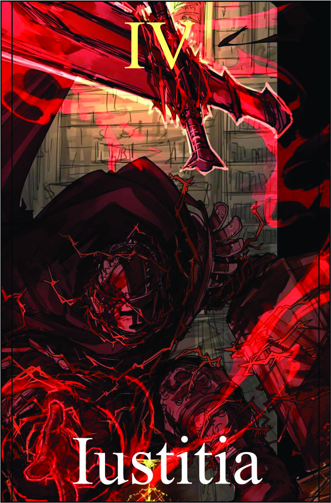

Justiça
Têndencia: BOM
Passiva:
Herança da Justiça:
Você possui uma herança de justiça que flui em seu sangue, concedendo-lhe uma espada especial imbuida com poderes divinos. Essa espada é uma extensão de sua vontade e força, e aumenta suas habilidades de combate. Além disso, a espada também tem a capacidade de canalizar sua energia e se conectar com suas habilidades, potencializando-as em ataques combinados devastadores.
Bônus: +1 Força | +2 Arma Branca.
Dano: (F + Arma Branca + 3) |
Efeito: Cada ataque com sucesso recupera de 1 hp.
Legado 1 - Investida Heroica:
Com uma demonstração de sua super força e vigor, você realiza uma investida heroica em direção ao seu inimigo. Ao colidir com o alvo, você causa dano físico massivo e o atordoa brevemente. Essa habilidade também cria uma abertura para combinações adicionais.
Essa habilidade pode ser usada tanto para fins ofensivos, como atacar diretamente os oponentes, quanto para fins táticos, como distrair ou enredar os inimigos em seu caminho.
Dano (V + F) + Espada + 2 | Alvo deverá fazer teste de vigor para ver não ficou stunado.
Condição:
A habilidade deve ser usada enquanto a espada especial estiver empunhada e custo 1HP.
Legado 2 - Golpe da Justiça
Com um movimento fluido, você desfere um golpe poderoso da espada especial, canalizando a energia da justiça. Esse golpe causa dano físico adicional e deixa o inimigo vulnerável, aumentando o dano recebido de outras habilidades por um curto período de tempo.
Dano: F + Espada | O alvo fica vulnerável rebendo +2 dano de outras fontes
Condição para ativar a habilidade:
Deve ser usada imediatamente após a Investida Heroica.
Legado 3 - Torrente de Sangue:
Utilizando seu controle sobre o sangue, você desencadeia uma torrente de energia sanguínea do inimigo atingido. Essa torrente causa dano mágico e debilita o alvo, diminuindo sua resistência a ataques físicos e mágicos por um curto período de tempo.
Dano: 5 | reduzindo -1 nas estatística | Alvo precisar fazer um teste de resistencia (vigor) para saber vai ficar debilitado por 1 segundo.
Condição para ativar a habilidade:
Deve ser usada enquanto o inimigo estiver sob o efeito do Golpe da Justiça.
Legado 4 - Golpe Final - Justiça Implacável:
Com um golpe preciso e implacável, você desfere um ataque devastador com a espada especial. Esse golpe concentra toda a sua força e energia, causando um dano massivo e final ao inimigo. O Golpe Final é amplificado pelo efeito combinado das habilidades anteriores, garantindo um ataque letal.
Espada + 5
Condição para ativar a habilidade:
Deve ser usada quando o inimigo estiver debilitado pela Torrente de Sangue.